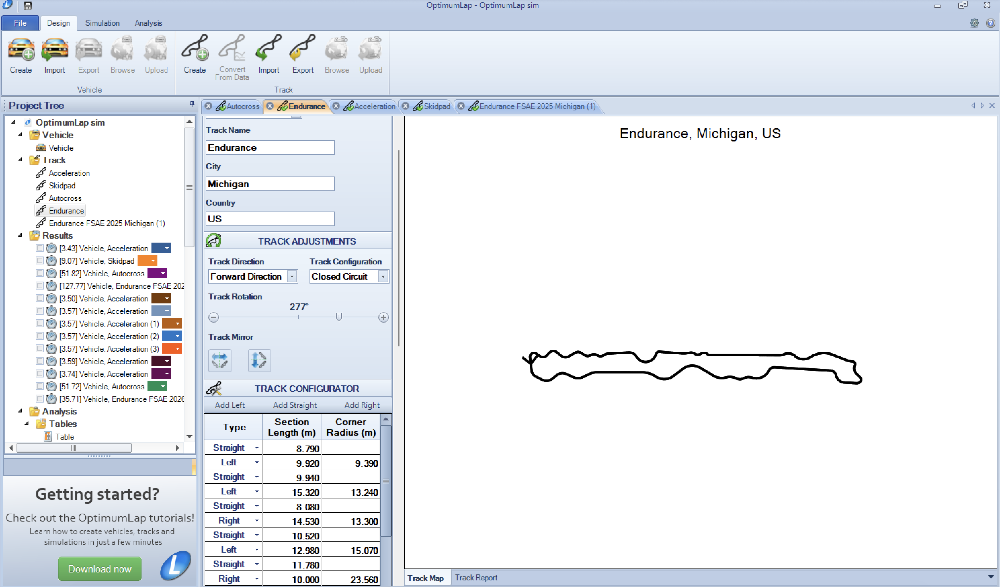
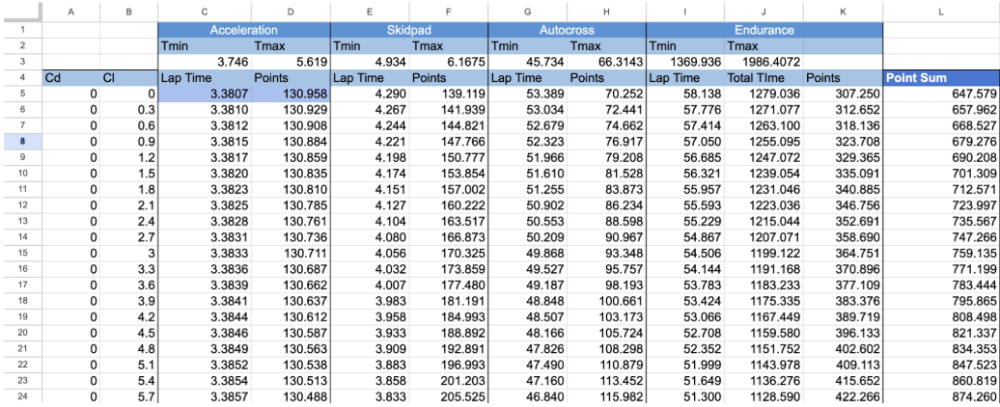
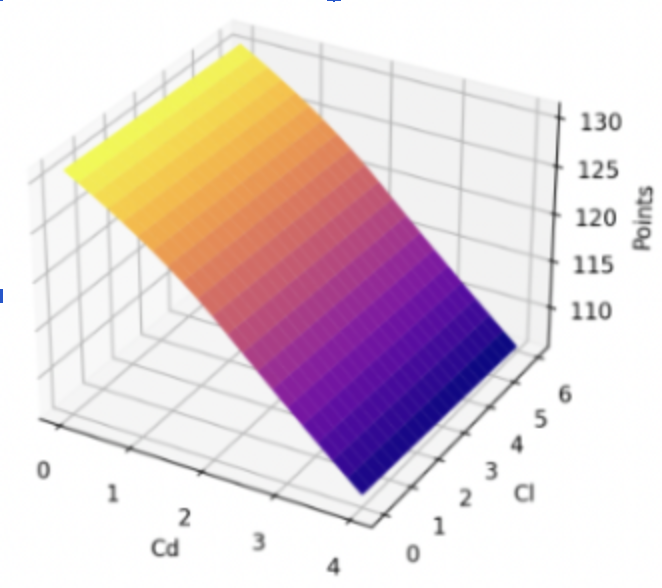
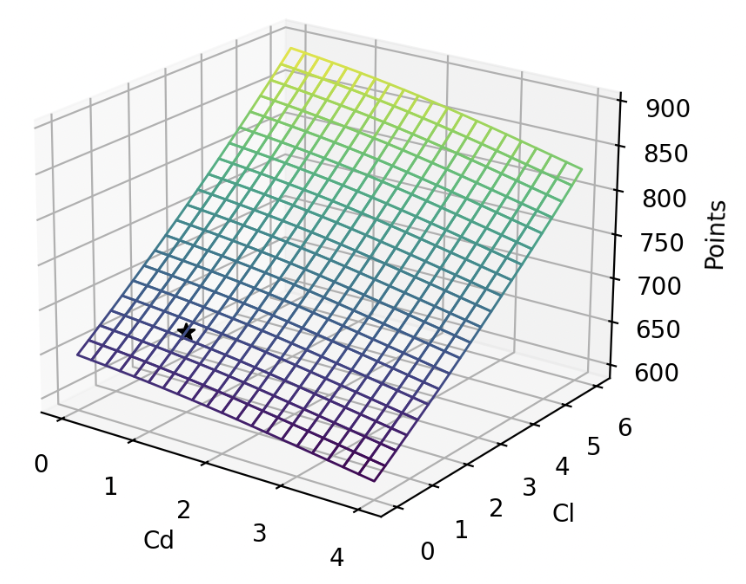
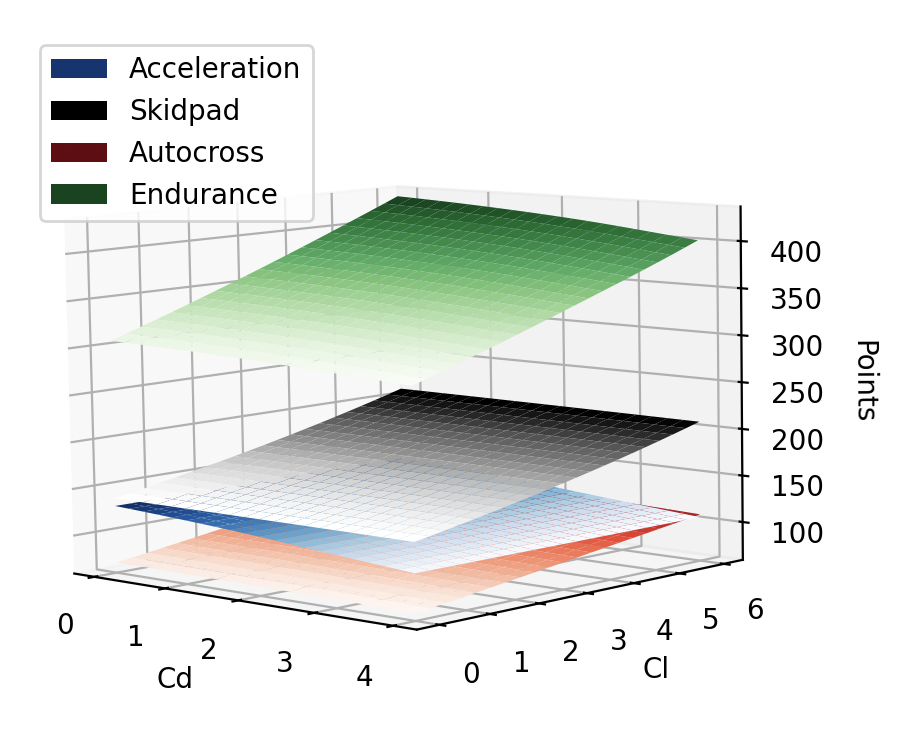
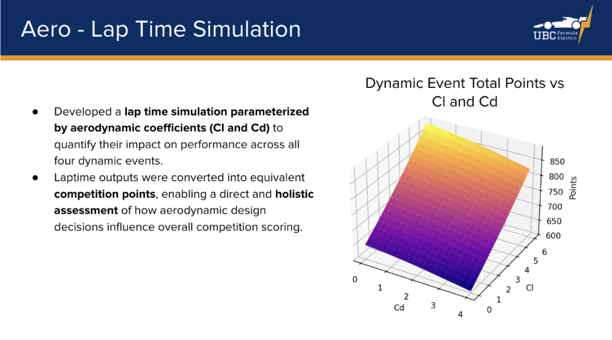
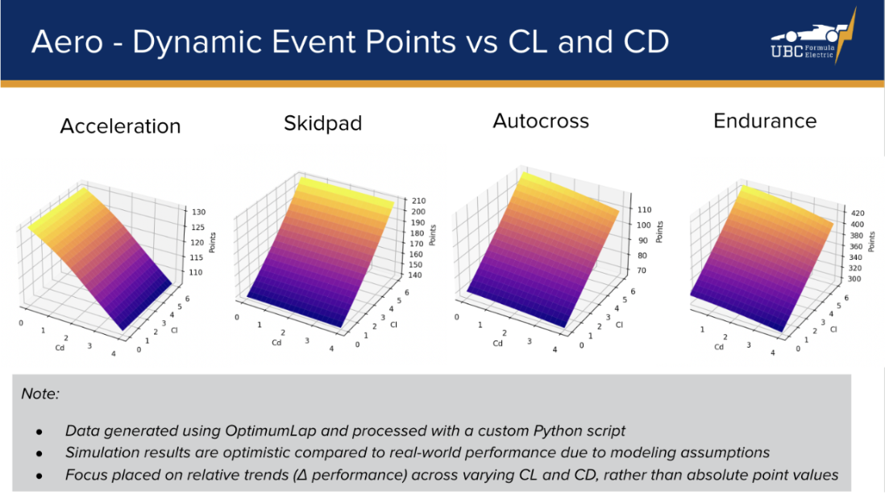

Overview
A racecars goal is (generally) to maximize downforce (Cl) and minimize drag (Cd). By using aerodynamic simulation software (StarCCM+), we can predict the Cl and Cd values for different aero-kit configurations created in CAD.
I created a program for the Aerodynamics to quantifiably compare different sets of Cd and Cl values (as opposed to guesstimating), and determine which airfoil setups prove most beneficial to lap times and competition success.
To do so, I started by running lap-time simulations using OptimumLap, and created a web-scraping software to consolidate desired data. I then created a software in Python that is used to visualize trends of performance for Cd and Cl values in different race categories (based on simulation data), and predict competition points for specific Cd and Cl values. These interpolated return values will guide UBC Formula Electric Aerodynamics kit design, as the Aero team aims to maximize points in competition.
Process
I began by sketching over maps of the 4 FSAE event race tracks in Solidworks for use in OptimumLap. After creating the tracks and a prototype car in OptimumLap, two-parameter batch simulations were run for each track with changing Cd and Cl coefficients. The lap-time results were exported to Excel, alongside their respective Cd and Cl values. Based on the FSAE rulebook, competition points garnered by each time (corresponding to a Cd + Cl set) were calculated for each event, alongside a total point sum.


I then created a CSV parser in Python using Pandas to store the desired data in an array. Using the data, I created 3D mesh grids of all events for visualization. This was initially the scope of the project, however I wanted a way to get an exact number estimate (given a Cd and Cl pair) rather than just being able to look at general graph trends.

This led me to create an interpolator based on 3d mesh grid splining that takes Cd and Cl value as units and outputs interpolated points value for desired event. The black star on the interpolated grid represents a test set of Cl and Cd values and their respective expected points output across all events. I also created an overlay of all event graphs for visual comparison.


Results
- The aerodynamics competition judge complimented the Python script, saying the use of point-based simulations was great!
- Our aero kit received an 8/15 score, the second best percentage of our car's subteam scores.
- Front wing and rear wing teams were able to optimize their airfoil configuration using the interpolator, and will continue to use it in coming years.
Slides from the official competition presentation:

